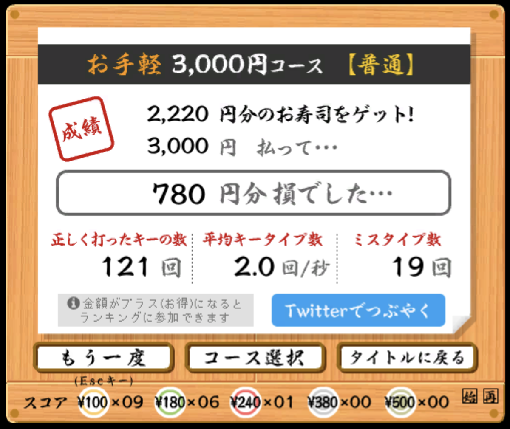
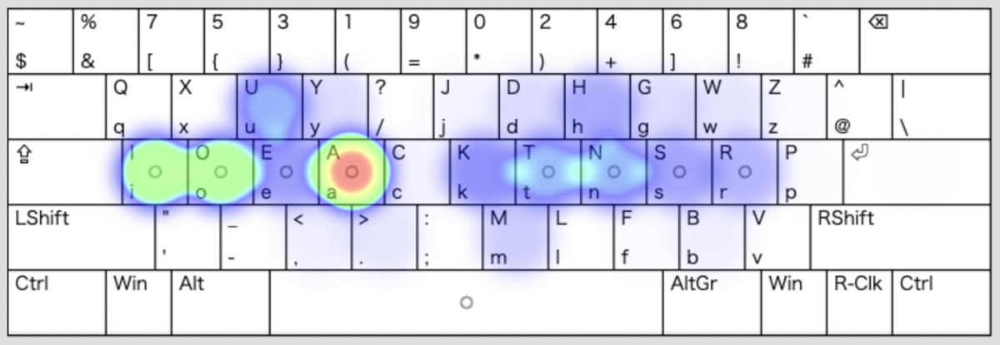

様々な練習方法を考案しつつ、練習を続けているProgrammer's Astarte+、徐々に打鍵速度が上がってきた。

その時々で必要な練習方法が違っていることはよくあって、今の自分には寿司打がとてもフィットしている様子。
新配列の練習当初はとにかくモチベーション維持が大切だと思っていて、初めからまとまった文章を練習すると辛くなりやすいので、寿司打くらい淡々と短い単語をリズミカルに練習するのが楽しい。
このブログ記事も、書きたい内容のペースに全然Astarteでの打鍵が追いつかなかったので、Qwertyを併用していたのだけれど、昨日くらいからAstarteだけで書けるようになってきた。
そろそろ練習し始めて一週間になるが、段々とこの配列の特徴が分かってきた。

ai が若干打ちづらい左手を大きく動かすので、慣れが必要。
z と p、 w が遠いこれはトレードオフの結果なので仕方がない。zは登場頻度が低いのでいいとして、もともとのAstarteでもそうである w の位置が、自分はやや遠く感じる。また、z が遠いので じ を打つときに ji とするか zi にするかで迷ってしまう。ローマ字配列は同じ言葉を打つ方法が何通りかあるので、悩ましい。
pの位置はオリジナルのAstarteと違っていて、prが打ちづらく、プログラミングでよく出てくる print や pro が打ちづらい。
ya が同指モーションこれも慣れかなと思うのだけれど、自分はまだなかなか慣れない。
ch が他と左右逆他の子音-母音、子音-半母音は、右→左 で、これだけが 左→右。
? が打ちづらいShiftを押しながらというのが個人的に地味に押しづらい。
―― こういった特徴のあるAstarte+だけれど、とはいえ結構洗練されていてトレードオフは煮詰まっている感があるので、配列自体の変更はしないことにする。
【追記】どうしてもz w p が遠いのとchが打ちづらいのが気になり、研究した結果、Astarte+をやめてオリジナルのAstarte配列に戻すことにした。したがってProgrammer's版もProgrammer's Astarteを使うことにする。
それにしても、ローマ字配列を変更すること自体が非常に久々で、とても新鮮。
新下駄などのかな配列に比べて、覚えることが少なく、打鍵自体もスムーズ。日本語の打鍵も想像以上にスムーズ。
Dvorakは英語専用と割り切って使っていたので、それが足枷になってなかなか上達が遅かったのだけれど、ローマ字配列はその心配はない。